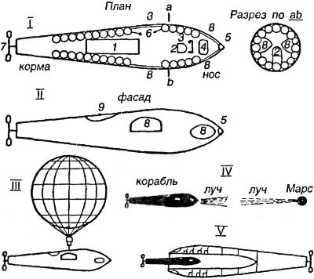
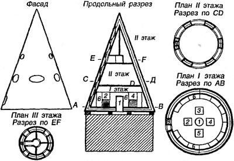

Электрические межпланетные корабли
Следующий тип космических кораблей, описываемых романистами начала XX века, — это электрические корабли. В этих кораблях энергия, необходимая для полета в межпланетном пространстве, поставляется «силой электричества». До действующей модели, электротермического двигателя Валентина Глушко еще далеко, и романисты в данном случае избегают подробных описаний силовых установок кораблей, намекая на существование веществ или законов, пока еще неизвестных земной науке.
Писательница В. И. Крыжановская в романе «На соседней планете» (1903 год) приводит описание перелета с Земли на Марс в особом космическом аппарате на двух человек. Придуманный романисткой корабль имел форму сигары, которая на одном из концов заканчивалась огромным пропеллером. В стенках корабля имелись четыре окна, закрытых толстым стеклом. Вверху было устроено входное отверстие, прикрытое крышкой. Внутри аппарата находилось множество прозрачных шаров, наполненных губчатым веществом. В носу корабля устанавливалось сиденье из мягких подушек, а перед ним — «электрический двигатель» с подвижным рулем, как у велосипеда (видимо, прообраз современного джойстика!).
Взлет с Земли происходил следующим образом. Со стартовой площадки корабль поднялся при помощи воздушного шара На определенной высоте корабль оказался в мощном «электрическом потоке», пущенном жителями Марса. Пропеллер, установленный на корме, уловив их, завертелся; шары с губчатым веществом получили одноименный заряд, и под воздействием сил электростатического притяжения корабль полетел к Марсу.

При всех очевидных несуразностях данного проекта в книге Крыжановской попадаются и весьма любопытные страницы. Вот, например, как описан момент прибытия «электрического» корабля на Марс:
«…Вдруг в этом море паров показалась большая зеленоватая звезда, которая неслась навстречу земному кораблю. Скоро можно было разглядеть громадную, длинную трубу такой же формы, как аппарат, занятый Атарвой [Атарва — маг и пилот корабля проекта Крыжановской. — А. П.], но только втрое толще и длиннее; широкие электрические лучи, подобно веслам, выходили из него. Сильный луч света был направлен прямо на корабль Атарвы. Когда оба аппарата, с поразительной быстротой несшиеся один на другого, были на расстоянии не более одной секунды один от другого, передняя часть большого аппарата быстро откинулась. Свет на земном снаряде тотчас же угас, и он, словно ящерица, скользнул внутрь встреченного большого корабля. Последний тотчас же повернул и, как стрела, помчался назад.
Мало-помалу полет стал замедляться. Потом корабль вошел в узкий и темный, как туннель, коридор и, наконец, проник в большую залу, покрытую прозрачным куполом. В этой зале корабль остановился на нарочно устроенной для него площадке. Могучий ток со свистом вырвался из аппарата, прогремел под сводом туннеля и потом все стихло».
Не правда ли, этот фрагмент очень напоминает эпизод из современного фантастического фильма типа «Звездных войн»? Именно так мы представляем себе ближайшее будущее космических пилотируемых систем. Более того, подобный вариант орбитальной «стыковки» неоднократно рассматривался в проектах 70-х годов XX века, о чем мы еще поговорим.
Другой вариант марсианской экспедиции на электрическом корабле предложил Л. Б. Афанасьев в фантастической повести «Путешествие на Марс». Аппарат Афанасьева, получивший название «Галилей», был сделан из металла и имел вид конуса. Внутреннюю полость персонажи-конструкторы разделили на три этажа: на первом (нижнем) этаже располагался склад с провиантом и водой, аппараты для производства искусственного воздуха, резервуары для поглощения углекислоты и нечистот; второй этаж занимала большая общая зала, а верхний был разделен на четыре «квадранта», каждый их которых представлял собой отдельную комнату для пассажиров. Стены корабля были очень толстые и состояли из нескольких простенков, между которыми была залита вода, которая, по мнению автора, способствовала смягчению «первого толчка» при старте.
Для обеспечения старта был построен «нижний электрический механизм, остающийся при отлете на Земле» и придающий «Галилею» начальное ускорение, а на самом корабле имелись «электрические машины», вырабатывающие мощное электростатическое поле, отталкивающая или притягательная сила которого служила основой для движения корабля в межпланетном пространстве.

Отправление с Земли (из пригорода Лондона), по Афанасьеву, выглядело так:
«Пилот нажал кнопку. Электрические машины пришли в действие. «Галилей» весь как-то дрогнул и подбросил вверх своих пассажиров. Однако все обошлось благополучно, и мягкие стены спасли всех от ушибов. Все свершилось настолько тихо и незаметно, что не верилось, в самом ли деле снаряд дал нужный толчок. Пилот бросился к одному окну и порывисто стал отвинчивать гайки, закрывающие его. Через минуту внутренняя закладка отпала. Тогда он надавил электрическую пружину, — отпала внешняя закладка и обнаружилось эллиптическое окно, сделанное из тонкого хрусталя».
Перелет от Земли до Марса и обратно для пятерых пассажиров занял полтора года.
Еще один проект электрического корабля был предложен английским сочинителем Джоном Джекобом Эстором в романе «Путешествие в другие миры», перевод которого на русский язык появился в 1900 году.
Действие романа происходит в 2000 году. Трое ученых отправляются в путешествие на Юпитер и Сатурн (само по себе очень оригинально, если учесть, что подавляющее большинство авторов того времени посылали своих героев на Луну или Марс, в лучшем случае — на Венеру). Движение корабля в межпланетном пространстве основано на изобретенном персонажами способе «отталкивания от планет». Вот как Эстор описывает этот способ:
«— Не странно ли, — заметил д-р Кортланд, — что хотя уже целый век тому назад было известно, что тела, заряженные разными электричествами — положительным и отрицательным, — притягивают друг друга, а те, которые заряжены одинаковым электричеством, отталкивают друг друга, никто не подумал воспользоваться этим?..
— Постойте, я догадался! — воскликнул Эйро. — Мы можем построить не пропускающий воздуха снаряд, герметически закупориться в нем и пустить его таким образом, чтобы он отталкивался магнетизмом Земли; тогда он отскочит от нее с одинаковой или такой силой, которая превосходит притяжение Земли. Я думаю, что Земля имеет такое же отношение к пространству, как отдельные частицы ко всякой твердой, жидкой или газообразной материи: как частички стремятся разъединиться под влиянием теплоты, так и Земля оттолкнет этот снаряд, если надлежащим образом применить электричество, которое есть не что иное, как другая форма теплоты. Это может и должна сделать апергия. <…> В апергии мы имеем противовес тяготению, противовес, который должен существовать, иначе система уравновешивания сил в природе будет нарушена».
«Апергетический» корабль Эстора, получивший название «Каллисто», имел вид короткого усеченного цилиндра диаметром 7,62 метра и высотой 6,4 метра. Стены, крыша и пол сделаны двойными. Материалом для корпуса служил «беррилиум». В простенке помещалась минеральная вата, защищающая от холода. Снаружи корабля был устроен желоб для «собирания дождя на Юпитере и Сатурне».
Внутри «Каллисто» имел два этажа и небольшую вышку в куполе — для астрономических наблюдений. Широкое плоское основание и низкий центр тяжести должны были стабилизировать движение корабля в атмосфере Юпитера, где, по мнению автора, дуют сильные ветры.
Старт корабля состоялся 21 декабря 2000 года в 11 часов утра из Нью-Йорка. Облетев Луну и воспользовавшись зарядом апергетической силы, корабль разогнался до скорости 1,5 миллиона километров в час. Путешествие к планетам-гигантам, высадка на их поверхность и последующее возвращение на Землю заняли у межпланетчиков Эстора чуть менее семи месяцев.